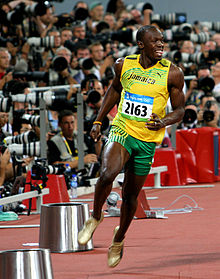

Usain St. Leo Bolt (Sherwood Content, parroquia de Trelawny, Jamaica, 21 de agosto de 1986), es un atleta jamaicano especialista en pruebas de velocidad. Ostenta ocho títulos mundiales y seis olímpicos, y posee además los récords mundial es de los 100 y 200 m lisos, y la carrera de relevos 4×100 con el equipo jamaicano. Es uno de los siete atletas que en la historia han ganado títulos en las categorías juvenil, junior y absoluta. Se le conoce como "Lightning Bolt"(rayo bolt)
En el campeonato mundial junior del 2002, obtuvo una medalla de oro en los 200 m lisos que le convirtió en el ganador más joven de la historia del evento para ese tiempo. El 2004, en los Juegos CARIFTA, fue el primer velocista en la categoría junior en correr por debajo de los 20 segundos en los 200 m, con marca de 19,93 s,1 sobrepasando el anterior récord de la categoría ostentado por Roy Martin por dos décimas de segundo. Su carrera profesional inició el 2004, y aunque compitió en los Juegos Olímpicos de ese año, perdería las siguientes dos temporadas por lesiones. En 2007 superó el récord jamaicano de los 200 m, hasta entonces en poder de Don Quarrie, con un tiempo de 19,75 s.

El año 2008, implantó su primer récord mundial en los 100 m lisos con 9,72 s, y culminó el año con otras marcas absolutas en esa misma prueba, en los 200 m y en la carrera de relevos 4×100 con el equipo de Jamaica, con registros de 9,69 s; 19,30 s; y 37,10 s respectivamente, durante los Juegos Olímpicos de Pekín. Tales hazañas le consagraron como el primer atleta en ganar tres pruebas olímpicas desde Carl Lewis en 1984. En 2009 superó sus propios récords absolutos de 100 y 200 m lisos con registros de 9,58 y 19,19, respectivamente, durante el campeonato mundial de Berlín∫,2 siendo el primer atleta en ostentar los títulos mundiales de los 100 y 200 m lisos tanto en el campeonato mundial como en Juegos Olímpicos.
El tiempo con el que rebajó la marca mundial de los 100 m en el 2009 es el de mayor margen desde que fue implantada la medición digital.3 Sus proezas en las pruebas de velocidad le han valido ser conocido como Lightning Bolt,4 y los reconocimientos de «Atleta del Año» por parte de la IAAF, y la revista Track and Field, así como el premio Laureus.
En los Juegos Olímpicos de Londres 2012, el 11 de agosto, estableció un nuevo récord mundial en el relevo 4x100 metros con registro de 36,84 s. Además superó el récord olímpico en los 100 metros lisos tras ganar la final con un tiempo de 9,63, estableciendo la segunda mejor marca de la historia, y también triunfó en los 200 metros, siendo el primer atleta en ganar la medalla de oro olímpica en dos juegos consecutivos en ambas pruebas.